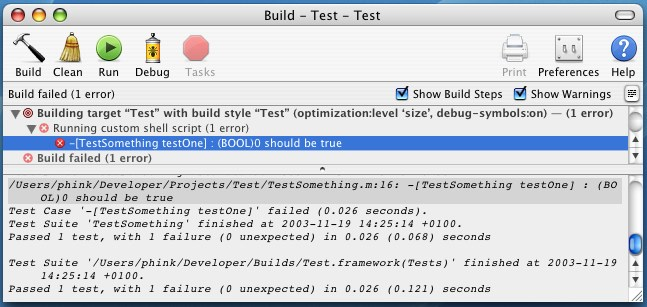
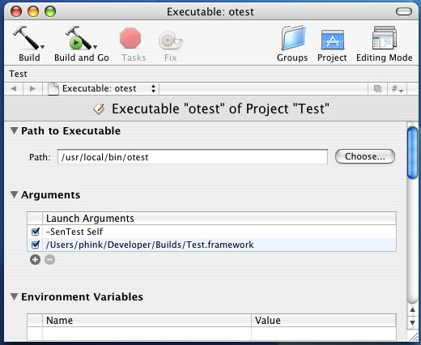

|
|
|
|
There are different opinions on this, and no hard rules. Depending on your needs and preferences you can write your tests:
The TestingKit itself now uses the second method. The Examples in the OCunit distribution illustrates the other possibilities: for instance the PersonComplete project puts the tests in the same project and target, while the SenRandomTest project tests some parts of the SenFoundation project. Whatever your choice, you can configure your project to run the tests automatically from Xcode after each build, or on demand, when running an executable.
Tests can be executed from Xcode in two different ways detailed below: after each build or when running your application.
Two tools are used to run tests directly from XCode:otest and RunTargetUnitTests. These tools can be installed anywhere, but you will have to configure your project with the paths you choose (recommended locations for these tools include /usr/local/bin/otest, or ~/Developer/Tools/otest and ~/Developer/Tools/RunTargetUnitTests).
Add a new "Shell Script Build Phase" to the target you want to test;
Inspect this shell script build phase, and specify the path to the RunTargetUnitTests tool (Fig. 1).
Add a build setting with the name: TEST_AFTER_BUILD and the value to YES in the target inspector (or in a Build Style if you prefer to run tests only when building such a style, but there's a bug in the current version of Xcode that prevents build style values to be passed to shell script, so this does not work).
If otest is installed anywhere else than ~/Developer/Tools/otest, specify this path in a OTEST build setting, for instance in you target inspector.

|
|
Fig. 1: Shell Script Inspector. |
When building this target or (build style), tests run after the build, and results are logged in the Build window. (Fig. 2). When you select the error, the failed test will be selected in the code editor (however, these test failures are not yet reported in the "Errors and Warnings" smart group.
|  |
|
Fig. 2: Test results in the Build window. |
You can do this by configuring the Executables of your target:
For executable targets such as applications, add a -SenTest launch argument (-SenTest All will run all your executable tests, including those of linked frameworks, -SenTest Self will run only your executable's tests, -SenTest None will not run any test).
Note: It is currently not possible to automatically run the tests from an application if it is compiled with "Zero Link", see Troubleshooting below.
If your project has no executable (for instance a framework):
|  |
|
Fig. 3: otest as executable. |
Both methods can be used in alternance, as the first is useful to code, build and test in short cycle, while the second can be useful when debugging a failed test.
The OCUnit contains a number of templates. These can be added to your own, for instance in ~/Library/Application Support/Apple/Developer Tools.
Notes:
Everything is installed but none of your Application tests are found.
It is likely that you are using Zero Link, and this makes the automatic discovery of tests fail. There are two possible workarounds:
http://www.sente.ch/software/ocunit/
feedback@sente.ch
©Copyright 1994-2005, Sen:te (Sente, SA). All rights reserved.